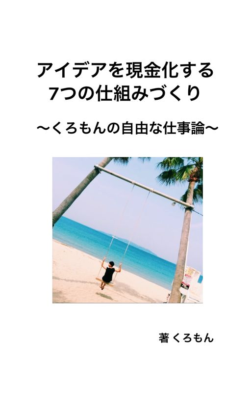
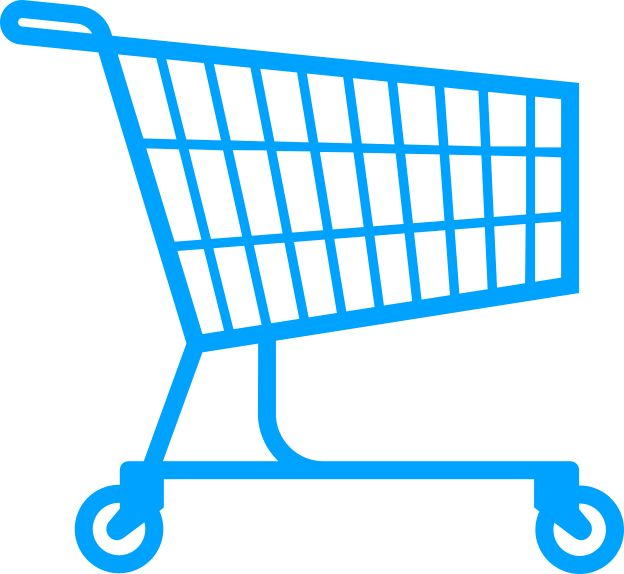
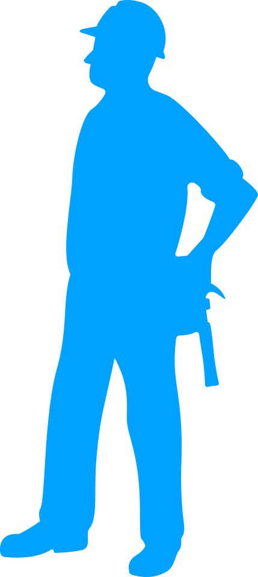
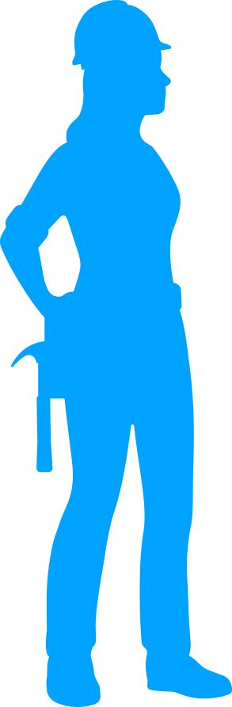

| アイデアを現金化する7つの仕組みづくり: くろもん自由な仕事論 | |
| くろもん | |
| (2019) | |
1

2
はじめに
【著作権について】
この書籍は著作権法で保護されている著作物です。 下記の点に
ご注意戴きご利用下さい。
この書籍の著作権は作成者に属します。 著作権者の許可なく、
この書籍の全部又は一部をいかな る手段においても複製、転
載、流用、転売等することを禁じ ます。 この書籍の開封をもっ
て下記の事項に同意したものとみ なします。 この書籍は秘匿
性が高いものであるため、著作権者の許 可なく、この商材の全
部又は一部をいかなる手段においても 複製、転載、流用、転売
等することを禁じます。 著作権等違反の行為を行った時、その
他不法行為に該当する 行為を行った時は、関係法規に基づき損
害賠償請求を行う等、 民事・刑事を問わず法的手段による解決
を行う場合がありま す。 この書籍に書かれた情報は、作成時
点での著者の見解等 です。著者は事前許可を得ずに誤りの訂
正、情報の最新化、 見解の変更等を行う権利を有します。 こ
の書籍の作成には万全を期しておりますが、万一誤り、 不正確
な情報等がありましても、著者・パートナー等の業務 提携者
は、一切の責任を負わないことをご了承願います。 この書籍を
利用することにより生じたいかなる結果につ きましても、著
者・パートナー等の業務提携者は、一切の責 任を負わないこと
をご了承願います。
3
目次
1.消費者思考脱出
2.恋愛心理とマーケティング
3.現代商売の魔術USPとは？
4.江戸時代の商人流"集客"の教え
5.お願いや告白を100%通すためのテクニック
4
1.消費者思考脱出
突然ですが
あなたがこの一週間で
お金を使った場面を紙に書いてください。

。。。。。。
僕の場合はパンケーキとアイスとアイスとアイスとア
イスとアイスとアイスとあ、、、、笑

5
なんでもいいですが、
前回出版した『lifehack』の中で
お金を使う瞬間は
"悩みを解決するため"
だと話していました。
僕は糖分を取らないと
倒れてしまうカラダのようで
仕方なかったんですw
だから
糖分を取らないと生きれない
という悩みを解決するために
お金をはらって
アイスを毎日買ってました。笑
6
ってのは言い訳ですが、、、、
本題に入っていきますね
世の中には
2種類の人間がいます。
別に僕が尊敬しているホストの方の
言葉を真似した訳ではありません(・∀・)
その２種類とは何か？
7
それは
仕掛ける側と仕掛けられる側
です。
なんだそれ？？
って思いますよね。
僕も大学生の頃
そんな話を聞いてそう思いました。
仕掛ける側と仕掛けられる側ってのは
あらゆる分野であります。
僕はアイス屋さんやカフェでは
完全に仕掛けられる側になってます。笑
8
逆にビジネスの分野では
仕掛ける側になっています。
あなたにも
同じように何かしら
仕掛ける側と仕掛けられる側を
両方備えています。
これってどっちがいいの？？
結論から言うと
自分が成功したい分野や
人生というものにおいては
9
仕掛ける側
にならなければなりません。


『いやいや、、、
そもそも仕掛ける側って
よくわかんないんですけど（笑）』
まぁ、落ち着いて聞いてください。
僕らって普段生きていく中で
毎日お金を使っていると思います。
10
そりゃ、資本主義社会なんで
当然なんですが
例えば、、、
僕は大学の頃に衝動買いで
30万円のギターを買いました。
もちろん、ローン組んでです。笑
それは必ずしも
必要だったかというと
"必要ではありませんでした"
11
なんならライブで
１度しか使いませんでした^^;
なんで買ったのかっていうと
店員さんが
めちゃめちゃそのギターを持ったら
どんなことが起こるのか
僕にイメージさせてくれたからです。
そして僕は感情で
『めちゃいいやん』
と思って購入したんです。
12
購入した後に
購入した自分を正当化するために
理論的に考え出しました。
今考えると
あまりいい買い物ではありませんでした。笑
仕掛けられていました。
この場合、
仕掛ける側は
ギター屋さんです。
13
世の中って単純で
仕掛ける側の方が
お金を持ってます。
さっきのギターの話でいうと
僕は30万円マイナスになりましたが
楽器屋さんは30万円プラスになっています。
いろんなとこで
圧倒的に仕掛ける側の方が
経済力や物事の主導権を握れるんです。
じゃ、仕掛ける側は何か搾取してるのか？？
14
いえいえいえ、、、、笑笑
そういう訳ではありません。
例えば
嵐や乃木坂やＢＴＳやBlackpinkは
プロデューサーや
事務所の力などにより
世の中のファンに仕掛けています。
15
ルイヴィトンやサンローランも
世界中の顧客に向けて
マーケティングを行い仕掛けています。
政治家も同じです。
安倍総理は
街頭演説やテレビ討論、国会などを通して
人気、支持率を得ていますが
国民や議員に対して
仕掛けています。
悪いことをしているという
訳ではなく、
16
感謝や感動を与えながら
お金も同時に得ています。
芸能や政治、大きなブランドは
わかりやすいですが
あなたの身近なとこでも頻繁に起きてます。
そして仕掛けられる側に居続けると
どうしてもお金も時間もなくなり
自由から遠ざかって
しまうんです。
17
例えば、
会社に雇われて働くことも
そうですね。
時間や労力と引き換えに
給料をもらって
働いていますが
それだけその１時間
死ぬ気で頑張っても
給料は変わりません。
三六協定やなんやかんや
の労働基準法の隙間をくぐって
会社は従業員やバイトに
18
仕事をさせます。
三六協定とか聞いたことがないって
社会人も6割いるらしいからヤバイですよねw
そうやって何も考えずに
周りに流されて生きていると
ほとんどの行動が仕掛けられて
動いている場合が多いです。




19
じゃ、実際にどんな人が
仕掛けられる側なのか？
"仕掛けられる人の特徴"
①セール品や〇％オフにすぐに飛びつく
企業が販売促進のためにやっている
セールや◯%オフに飛びつくと
安い安いと思ってお金を使い
気がついたら金欠になっている。
20
②短期的な欲で行動しがち
短期的な欲ってのは
本能で行動してしまうことで
原始人の頃から備わっていることです。
今の文明社会で原始人の考えで
行動するのは
ヤバイと思いませんか？？
それやってる人がめちゃ多いです。笑
例えば、、、、
21
やらないといけないことがあるのに
友達との遊びを優先したり
（優先順位がめちゃめちゃおかしい）
よくわかんない投資などの儲け話に
食いついたり
ものを買うときに
衝動買いが多かったり
新商品にすぐに食いつく人や
22
だらだらと目的もなく
SNSやyoutube、
TIKTOKを見る人です。
※必ず広告が流れてきたりして購買意欲が無意識のう
ちに高められてて消費ばかりします。
③被害者意識が高い
自分なんかには無理そうとか
どうせ私には、、、
とかすぐ思う人
23
人のせいやモノのせいにしがちな人
→先生の教え方が悪いとか
このグローブのせいでレギュラーになれないとか
思う人です。
自分にも非があるのに
常に誰かに言い逃れする人などです。
④私バカだからってよくいう
私バカだからって
言ってる人いますが、、、
24
それ死ぬまで言い続けるんですか？
っていう話で
人間ならどこかで
成長しない限り
終わりです。
これを言い続けると
貧乏になって行く
死神ワードの一つですね。
25
⑤することをよく先延ばしにする
何か行動すると
人間ってのは必ず
面倒、恐怖、不安、などの
マイナスの感情を無意識下
で持っています。
だから
行動を先延ばしにしがちですが
先延ばしにしても
26
何一ついいことは
ないです。
むしろ時間もお金も減って行くので
マイナスでしかありません。
基本は今すぐ！
なるべく早く行動を心がけましょう。
他にもたくさんの
パターンがありますが、
書いていくときりがないので
この辺にしときます。
27
何が言いたいかっていうと
仕掛ける側にならない限り
貧乏やストレス、
愚痴不平不満を言い続ける
人生で年老いて行くってことです。
前回出版した 『Lifehack』 の中で
僕は大学生の頃に
"心にゆとりがある人間になりたい"
28
そう思ったと書きました。
心にゆとりがない人は
ほぼ仕掛けられる側なんですね。
満員電車や満員バスで
死にそうなゾンビのような
顔をして出勤や帰宅途中のサラリーマンを
たくさん見ましたし
バイトしていたファミレスで
たくさんのお客さんの愚痴が
聞こえてきましたが
29
全部仕掛ける側の人が
絶対に感じないようなことでした。
では"仕掛ける側"になるには
どうすればいいのか？
よく聞かれます。
❶考え方を変える
❷行動を変える
あなたの行動はあなたの考えをもとに
行われています。
30
考え方を変えていかなければ
ならないんです。
消費者的思考から脱出して
仕掛ける側の思考へ
最初は少し違和感があると思います。
実は仕掛けられる側の
考え方ってのは
無意識 で起こってることが多いからです。
だから "意識する" って
ことは重要だと覚えててください。
31
え！？
何を意識すればいいんですか？(・∀・)
そうですね〜
ポイントは
小学生の総合の時間って
覚えていますか？
道徳の授業ですね。笑
人として当たり前のことです。
32
・向上心を持つ
・約束を守る
・愚痴不平不満を言わない
・清潔感がある
・全ては自己責任
・誰に対してもどんな時も礼儀正しい
これができていない人は
何やってもうまくいかないのは
当然なんですが、、、、
できてない人は
多いですね。
33
まずはこの当たり前が
できているか見直しましょう。
これが見直せたら次に
どうするのかというと、、、
物事を判断するときに
常に 『なぜ？』 を追求する。
なんでそうなっているのか？
なんでそんなことを言ってるのか？
34
例えば、
男子トイレに昔は
「床を汚すな！」
という張り紙がありましたが
ある時期から
「いつも綺麗に使っていただきありがとうございます」
という張り紙に変わりました。
35
男性の方は
なんとなく気づきませんでしたか？笑
この張り紙から
何が読み取れるかというと
命令文よりも感謝する文を
使うことで人は自分のことだと思い
「綺麗に使わないといけない」
とより思うようになる
ということです。
公衆トイレですら
こんな些細なことで
綺麗に使ってもらえるように
仕掛けています。
36
街を歩いている
広告や店員さんの接客一つ一つでも
『なぜ？』を追求して見ましょう。
そうすれば
どういう風に
仕掛けようとしてるのか
知ることができます。
それから思考して実践していきます。
37
「この商品は聞いた感じ安そうだけど、長い目で見た
らあっちの方が安い」
「知識やスキルへはどれだけでも時間とお金をかけれ
るけど、少ない金でFXやバイナリー、仮想通貨の投
機するのはよくない」
など考えることが
できるようになります。
そして
『あの会社はあんな企画をしていたけど、
これって使えるんじゃないか？』
『この広告の仕方ってすごく効率よく
見込客が集まりそうだ』
38
って思えるようになる時がきます。
この章のまとめをすると
1.仕掛けられる側の行動や考えを変えよう
2.人として当たり前の考え方
3.物事で常に『なぜ？』を追求する
4.日常生活で活かして行く
ってことですね。
今からできることなので
まずはこれをスマホでも紙でも
いいからメモしてください。
39
2.恋愛心理とマーケティング
あなたは"マーケティング"という言葉を
聞いたことはありますか？
「何言ってるのかよくわかんないっす」
ですよね。笑
実際にマーケティングって何かというと、、、、
売れる仕組みづくり
40
のことです。
なんだそれって
思うかもしれませんが
このマーケティングを
理解すると全ての物事が
うまく行くようになります。
これはビジネスの世界以外でも
恋愛やスポーツ、音楽全てです。
そして、人の心理を読み解いたり
なんなら人心掌握術なんかも
使えるようになったりします。
41
マーケティングとは
人の理解 から始まるからです。
精神年齢が高い人と低い人の
違いは相手のことを思いやることが
できるかどうからしいです。
商売の世界で
お客さんのことを知れば知るほど
売り上げは爆発的に伸びますし
恋愛では
相手のことを理解すれば
喧嘩も減り、すれ違いも減り、
そして愛が実っていきます。
42
スポーツも対戦相手のことを
知ることは非常に重要なことですね。
で、今回はそのマーケティングについて
恋愛心理と絡めながら
ゆっくりと話していきます。

まず初めに何を話そうかなって
思ってたんですが、、、
最初は 第一印象 ですかね。
43
第一印象ってめちゃ重要なんです。
就活でも言われませんでした？笑
僕は金色のネクタイして
面接行ってました。
それはちょっと勘違いしてただけなんですがw
人は見た目で判断する生き物なんです。
44
私は彼氏を容姿で決めてません！
なんて言う女の子は
多いと思います。
しかし、実際には
無意識下で容姿で判断しているそうです。
こんな事例があります。
アメリカで選挙が
行われて
イケメンの立候補者と
そうでない立候補者がいたそうです。
45
結果はイケメンの立候補者に
70%票が入って圧勝したそうですが
票を入れた住民たちは
容姿ではなく政策に惹かれたと
答える人が8割だったそうです。
しかし、政策はどちらの候補者も
同じようなものです。
ここで何が起こっていたのかと言うと、、、、
46
無意識下で
容姿で判断していたんです。
例えば、面接に清潔感溢れた青年と
臭くて薄汚れた髭面のおじさんが
きた時に
面接官は瞬時に
清潔感溢れた青年を
採用しました。
恋愛でも同じように
"意識"している自分は
『性格が良かった』
『気遣ってくれた』
47
と言います。
しかし、
"無意識"に容姿で判断しているんです。
そう言うのを
ハロー効果 なんて言われてたりしますね。
"ハロー効果とは社会心理学の用語で、ある対象を評価する時に、
それが持つ顕著な特徴に引きずられて他の特徴についての評価が歪
められる現象のこと。後光効果、ハローエラーともいう。例えば、
ある分野の専門家が専門外のことについても権威があると感じてし
まうことや、外見のいい人が信頼できると感じてしまうことが挙げ
られる。『引用：Wikipedia』
48
で、ハロー効果ってのも
重要なんですが
無意識下で
思考の錯覚 が起きているってことが
最も重要なんです。
容姿に限らず
僕らの思考って無意識下で
暴れまわってるんです。笑
それで本当はやっちゃダメなこととか
して問題になったりします。
でも、この思考の錯覚を
うまく使えばビジネスでなりあがれますし、
49
恋愛では理想の相手と付き合うことが
できるようになります。
思考の錯覚によって
自分の実力以上の評価を
他人から受けることができるんです。
あなたの周りに
実力はあなたの方があるのに
あなたよりも収入が多かったり
あなたよりも
イケメンや美人ではないのに
素敵な恋人がいる人はいませんか？？
50
例えば、
めちゃめちゃ綺麗な美女だけど
近寄りがたい人と
いわゆる普通の容姿だけど
発言や動作、服装が要因で
めちゃモテる女の子とかいませんか？
女子に嫌われやすい女子とか
に多いらしいですがw
なんであの女の子はそんなにモテるのか？？
それは思考の錯覚を
うまく利用できているからです。
51
自分ではなく他人の思考ですね。
実際の自分以上に
自分を可愛く見せて
この人と付き合いたい
と思わせることを
天性でしている人もいれば
わかってやってる人もいます。
ちなみに僕は
そんな女の子には秒殺されます。笑
心射抜かれやすいのでw
52
これはビジネスのや仕事の世界だと
自分と同じかそれ以下の実力でも
立場や収入が高い人ですね。
本当はあなたの方が
実力が優っているのに
会社の役員や周りの人には
あなたよりも優秀に見えてしまうんです。
つまり何が言いたいかというと
周りの人の
思考の錯覚をうま
く使えるようになれば
53
恋愛やビジネスの世界では
非常に有利に働くんです。
そして思考の錯覚で
実力以上の評価をしてもらえば
周りの環境を変化できます。
人間は環境によって
左右される生き物です。
その環境にレベルの高い人がいれば
自然と成長が加速度的に伸びていきます。
サッカーでこんな面白い話があります。
54
ブラジル人の元プロサッカー選手で
カルロス・カイザーって人がいました。
彼はなんと
ほとんどプレーすることなく
26年間現役プロを続けました。
で、彼が使ったのはよろしくない方法ですがw
仮病やお金を渡して記者に嘘の記事を
書かせたり、
携帯電話を二つ所有して
英語まがいの言葉を使ったり
55
当時のブラジルのスター選手と
友達になって推薦状を書いてもらったりして
プレーしてないのに
あたかもすごい選手であるかのように
思い込ませ
次から次へクラブを
転々としていたそうです。
様々な国のチームにいましたが
ほとんどプレーした経験はありません。笑
彼がやっていたことは
クラブの幹部たちの思考の錯覚を
56
うまく使っていたんです。
思考の錯覚を使うことは
詐欺ではありませんが
正直な話、人を騙しても
信じ込ませてしまうほど
強力なんです。
カルロス・カイザー
についてはネットで検索してみてください。笑
57
思考の錯覚ってのを
うまく安全に使えば
真っ当に仕事やビジネス、
恋愛で成功することができます。
恋愛でLineのやり取り一つ
とっても文章の使い方や
既読をつけるタイミングなどで
相手の心理をうまく利用することが
できるんです。
これはビジネスの現場だと
テレアポやメールのやり取りで
応用ができます。
58
例えば、LINEで
相手からの返信が遅かったり
既読無視されがちな時ってないです？
ここでやってはいけないことは
相手に考えさせるような
文章を送ることです。
目的もなくメッセージ送るのはやめましょう👍
目的伝えずに
『週末空いてる？』
なんて聞いたものなら
『え、これって空いてるって言ったら何かあんのか
な？』
59
『バイトだったら休まないといけないやつ？』
『てか何するの？何するかで変わるんだけど』
なんて相手は考え出します。
人間は考えることで
疲れて考えることを嫌うので
そのまま既読無視や返信がめちゃ遅くなります。
ビジネスの世界でも
お客さんに考えさせては
いけないという教えがあります。
60
お客さんも自分で考え出すと
疲れてしまって
商談がうまくいかなかったり
次の提案が通りにくくなります。
じゃ、どうやるのか？
YESかNOで
答えられる質問を送りましょう！
これめちゃ重要なんですよね。
61
イエスかノーかだったら
それ答えるだけなんで
デートに誘いやすくなります。
ビジネスでは
お客さんのイエスを連続で
とっていくなんてセールステクニックなんかも
ありますね。
この質問の仕方を
クローズドクエスチョン
なんて言ったりするので
今度友達に自慢してみてください。
62
『ねぇねぇ、クローズドクエスチョンって知ってる？
（どや）』
多分友達減りますw
この質問の仕方だけでも
かなりこれまでとは変わると思うので
活用してみてください。
でね、テクニック
上げていくときりがないので
どうすれば
売れる仕組みづくりが
できるのか話していきます。
63
で、恋愛と本当に似てるって
話はなんとなく伝わってきたと思いますが、
マーケティングをする上で
重要なことが
人間理解 です。
どうやって人間理解するかというと
リサーチ、調査、調べることですね。
例えば
合コンに行った時に
64
目の前に可愛い女の子がいます。
あなたはどうしますか？
最初から連絡先を聞くような
ファンキーな人はこの本を
手に取ったりしないと思います。
まず相手のプロフィールを知りますよね。
マーケティング（売れる仕組みを
作る）の基本も同じように
ターゲットにするお客さんの
プロフィールを作っていくことです。
65
誰に向けてするのか？
どんなことをしているのか？
その人はどんなものを求めているのか？
これらのことを決めるところから始まります。
次の章で
実際にどんなことをして行ったら
今の時代売れるのか話していきます。
66
3.現代商売の魔術USP
今の時代売れてる企業、
売り出し方がうまい企業には
共通点があります。
ライザップ、いきなりステーキ、ハズキルーペ、
ZOZO、、、などなど
これらには
共通点がありますが、
わかりますか？？
。。。。。。
67
答えは
"オーダーメイド"
です。
個別化したニーズに応え
それに対して商品やサービスを提供しています。
ライザップは一人一人の食事管理から
トレーニングまで作ってくれますし
いきなりステーキは
好きな部位、好きなグラム数を
自分で好きなように選べます。
ハズキルーペも同様に
一人一人にあった眼鏡を
68
ZOZOも
ZOZOスーツなどで
一人一人にあった服を提供したりです。
現代社会では
ものが溢れています。
新しいものを作っても
競合他社に秒で負けてしまいます。
で、どんなやり方がうまくいくのかというと
オーダーメイド化したビジネスです。
69
これって大衆向けに
やっているものではありません。
大衆向けに
マスメディアを使った戦略を
マスマーケティングなんて言ったりしますが、
この時代本当に
それではうまくいきません。
例えば、動物園や水族館は
経営が難しくなってます。
その代わりに
猫カフェ、フクロウカフェ、爬虫類カフェ、、、、
70
などの小さな市場に向けた
ビジネスモデルが増えているんです。
その小さな市場に向けて
ビジネスを展開していく時に
重要なマーケティングに
USPマーケティング
ってのがあります。
USP(Unique Selling Proposition)
独自のウリのようなものです。
71
これからの時代、
副業でも起業でも
ビジネスを作っていく時に
同じ分野やジャンルで商売している人は
めちゃ多いです。
だからこそ
かなりターゲットになる人を絞り込んで
自分の独自の強みを
いかしてウリにする
ということが重要です。
72
さっき書いた、
爬虫類カフェとかフクロウカフェなんかも
いい例ですよね。
爬虫類好きな人だけですし
大企業は収益が低くて手を出しませんが
個人や中小規模なら十分できます。
この前、ハンドメイドのアクセサリーを
作って販売したいって人がいましたが、
他にどれだけの人が
ハンドメイのアクセサリーを作って
販売しているかというと
めちゃめちゃ多いです。
73
だから、
誰に向けてするのか？
どんなものを求めいているのか？
を細分化させました。
このUSPマーケティングを使うことで
ニッチな層にアプローチできます。
ニッチとは
大企業が手を出さない小さな市場や
潜在的にニーズがあるがまだビジネスの対象として
考えられていない分野です。
74
市場規模は小さいですが、
お客さんは少々高くてもお金を出します。
例えば、
AKBのファンの方は
一人でCDを200枚とか買ったりしますよね。
昔はのアイドルにそんなファンは
ほとんどいなかったと思います。
ビジュアル系バンドの
ファンの人たちもそうですね。
75
V系のライブってチケット代が
他ジャンルのバンドよりも高いんです。
グッズもそうですね。
少ないお客さんが
一人一人の払ってくれる
お金が高くなるんです。
ライザップなんて
２ヶ月のプランで70万円とかかかる人も
いるらしいですよね。
重要なことは
USPを考えて同じ分野の
他のビジネスよりも
76
小さな層に独自の強みを
売っていくことです。
これってできてない人が
非常に多いんです。
例えば、脱サラして
飲食店を開きたいって方に
話を聞いてたら
『こんな食器を置いて、こんな雰囲気のお店にしたい
んだ』
ってよく話します。
77
でも、それはお客さん目線ではありません。
どんな人に向けて
他とか違う強みを
売っていくのか？
それを考えなければなりません。
ここで一つワークを出します。
【ワーク】
あなたが好きなこと、興味がある分野（やってきたスポーツ、恋愛、
美容、勉強などなど）を活かしてビジネスをするとします、その時
にどんな人に向けてやるといいと思いますか？
78
今売れるのは
間違いなくこのUSPを使って
小さな市場にアプローチしているビジネスです。
だから、BARを経営したい
って人も
BARのコンセプトをかなり絞って
どんな少ない人向けにやる必要があります。
そしてこれは
実店舗もそうですが
79
僕が大学の頃始めたwebビジネスでも
同じことが言えます。
小さなネットショップを作ったり
サイトを作成したり
自分で商品やサービスを作ったりしましたが
全て細かくどういう人に向けて
行うかということを絞りました。
例えば恋愛でも
ある程度、好きな系統ってありますよね。笑
その好きな系統じゃない人は
最初から候補にも入らない場合が
多いと思います。
80
さすがにみんなを
愛せるみたいな人は少ないと思いますしね笑
ある先輩が昔クラブで
ナンパする方法を伝授してくれたんですが、
『初めてきた人、もしくは慣れてない人』
に声をかけるそうです。
81
クラブ慣れしている人よりも
慣れていない人だけ絞って声を
かけて行くと
高確率で反応が
取れるらしいですが、、、、、笑
さすがに僕はクラブとか
あんま行かないんでわからないですが^^;
同じようなことですね！
恋愛もビジネスもターゲットを
絞った方が反応は当然高くなります。
82
4.江戸時代の商人流"集客"の教え
あなたは商売をするにあたって
最重要なことの一つはなんだと思いますか？？
よく、"営業できればそれだけで"
みたいな考えの人がいますが
それは違います。
商売とは
お客さんがいなければ
成り立ちません。
83
だから、保険の営業などで
ナンバーワン営業マンだった人が
脱サラしても
会社を倒産するなんて
話はよくありますし
飲食店でお客さんが全然来なくて
潰れるなんて話はざらにあります。
ついこの前も
僕が住んでる福岡市の天神ってとこで
よく行きつけだったカフェがなくなってて
残念でした。^^;
84
でね、お客さんを集めることを
集客って言いますが、
その集客の最強のテクニック
"リストマーケティング"
ってやつについて話していきます。
リスト＝顧客名簿、見込みがあるお客さん
です。
そもそもリストってどんなの？
と思うので話していきますが
85
コールセンターなどで
電話をかける時に名簿に電話番号がありますが
それはリストですね。
あと、成績がいいキャバ嬢さんや
会員制クラブのお姉さんは
ノートなどによくきてくれるお客さんのことを
メモしてたりします。
それはリストです。
リストはお客さんのメアド、電話番号、住所、LINE
などのことです。
86
なんども連絡が取れる
ように管理している連絡先ですね。
大企業もこのリストを
手にするために必死にやってます。
例えば、公式ラインに登録したら
何割引になる
なんてのもそうですね。
集客されてるんです。
87
で、なんでリストを集めることが
重要なのか？
江戸時代の商人の言葉で
こんなのがあります
『家が火事になったら、妻子より先に帳簿を井戸に投
げ入れろ』
帳簿＝お客さんの情報が書かれていて
昔はこんにゃくの材料で作られていて水に強かった。
妻子より先にって
言うくらいなんで相当ですよね笑
88
それくらい重要です。
で、恋愛で考えたらいいですが
もしもクラスに好きな子が
できたとします。
そしたら連絡先交換しますよね？？
なんで連絡先交換しますか？
もちろんメッセージのやり取りしたい、
ってのもあると思いますが
89
連絡先を交換することで
何回もデートに誘うことができますし
何回もアプローチができるようになります。
ビジネスでもお客さんの
連絡先を手に入れることで
なんどもアプローチできるようになるんです。
あなたのLINEやメールでも
クーポンや割引のメッセージが来ていませんか？
しかもそれは一度ではなく
何度も何度もできるんです。
最強っす。笑
90
なんで買って
メールなんて同時に千人や１万人に
送信することができるからです。
非常に効率がいいです。
さらに言うと、、、、
このリストマーケティングというものは
コストがほぼかかりません。
無料で使えるツールで
莫大な人数に同時にアプローチできるのです。
91
CMを出すよりよっぽど
反応が高いです。
ちなみに100倍以上反応率が
高かったりすることもあります。
そして何度も
連絡ができるので
一回来たお客さんを逃すことを防げます。
例えば、古着屋さんや飲食店も
リピーターにするのって
難しいんですよね^^;
92
何度も足繁く店に通ってもらうにはどうすればいい
か。。。。
そのヒントに
この リストマーケティング ってのが
あります。
この前、歯医者さんで
ホワイトニングしていた時ですら
お会計時に
『公式LINEできました！登録したら歯ブラシもらえ
ます』
なんて書いてあって
登録しちゃいましたもん。笑
93
自分に都合よく宣伝や
セールスができるようになるんですね！
何度もお客さんに
アプローチできることで
売り上げをコントロール
できるようになります。
で、一番僕が重要だと思うのが
何度も連絡が取れると
信頼関係が築けるということです。
94
この信頼関係を
築くってのがビジネスは
非常に重要なんです。
商品やサービスを購入する時に
さすがに信用も信頼もなかったらやばいですよねw
「この歯医者さん腕はイマイチだし雑だけど今日も行
くか、、、」
にはならないですよね。笑
信用と信頼を勝ち取れるんです。
95
補足で話しておくと
LINEの返信が遅かったり
予定守れない人は
ビジネスうまくいかないんで
改善しないとダメですね。
96
5.お願い事を100%通すテクニック
普段の日常で
自分の意見が通らないって
感じたことはありませんか？？
例えば、
恋愛でデートに誘ったのに
「考えとくね」
で終わるパターンのやつとか
告白しても
「そういう風に見てなかった」
で断られるパターンとか
よくあると思うんですよね。
97
仕事でも
お願いしたことをやってもらえなかったり
有給が取れなかったり
休みがもらえなかったり
ビジネスで
お客さんに商品を買ってもらえなかったり
色々あると思います。
では、どうしたら
自分の意見を通すことができるのでしょうか？
98
ここではいくつかのテクニックを
紹介していきます。
①イエスセット
これはセールスの世界で
よく言われてますが
『yes』を10回連続でとれってのがあります。
人間は特性として
『一貫性の法則』
ってのを備えてます。
だから簡単な会話で
相手の『yes』をとっていきましょう。
99
例えば
くろもん『今日は天気がいいですね』
A子さん『そうですね。今日は清々しいですね』
くろもん『今日みたいな日は外に出たくなりますよね』
A子さん『私もそうなんですよね。』
みたいな感じで
イエスを連続してとって行くことで
100
相手が反論やNoを言いにくくなるんです。
②バックトラッキング
ま〜た難しい言葉使って来たwwっw
なんて思いました？笑
これ何かっていうと
相手の言葉を繰り返してこちらがいうことで
相手が無意識に親近感を持たすことです。
101
・おうむ返しのようにそのまま言葉を言い返す
・要点をまとめて言い返す
・キーワードを使って言い返す
めちゃ考えてナンパしてる
ナンパ師の人とかこれ使ってるらしいですね！
③ミラーリング
相手の動きや動作を
自分の動作と合わせることです。
102
お茶を飲むタイミングから、身振り手振り、呼吸、体
の姿勢などを同じにすることで
相手と心理的に親しくなるテクニックです。
売れてるホストやキャバ嬢が
戦略的に使っている
ことも多々あります。
④返報性の原理
これはよくある話で
ドモホルンリンクルの無料お試しセットや
スピードラーニングの無料CD体験などです。
103
無料でギフトを
もらうことで好意を抱いて
有料ならもっといいものが来ると思うようになります。
昔僕の実家が田舎で
ご近所さんから大根もらったからって
母親がパンケーキ作って
お返しにどうぞ〜
って言ってましたが
まさにそれが返報性ですね。
何かしてもらったら
お返しがしたくなるんです。
104
実はこれって本能的に
備わっていて
吸血コウモリが獲物を捉えて
血を獲物を獲れなかった他のコウモリに
分け与えると
次に分け与えられた
コウモリはお返しに
分け与えるそうです。
日本人は海外の人よりも
とくに強いらしいですね。
105
大学生の頃に
僕が友達とじゃんけんで負けて
ナンパをしに行った時に
ハーゲンダッツを買って渡して
返報性を使って仲良くなって
連絡先を交換したことがありますが
恋愛の場面でも
多々利用できますね。笑
⑤接触頻度の原理
先ほどリストマーケティングの
とこで書きましたが
106
なんども連絡を取ったり
何度も顔をあわせることで
拒否反応や違和感が薄れ
親近感をもらうことができます。
テレビのCMや選挙活動とかで
よく使われてたりしますね！
恋愛では何度かデートに
行ってから告白すると思いますし
107
たった1度だけ3時間会うよりも
15分を5回過ごした方が
親密になるというデータも出ているくらいです。
他にも書ききれない
テクニックはたくさんありますが
ここで書いたテクニックは実践的で
すぐに使えますので
今すぐラインでいいから
何か一つ使って見てください。
108
まとめ
今回の本では
アプローチの仕方や
簡単なテクニックを話していきました。
実際にこれからビジネスを
初めて行くとなると
どんなことからして行ったらいいのか？
などと疑問に思うことが
あるかもしれません。
109
そんな方へ
最後にアドバイスがあるとすれば
周りの環境と人のツテを
作っていきましょう。
マルチ商法やネズミ講、
投資系のよくわかんない人ではなく
真っ当にビジネスをしている人の
ツテを作っていきましょう。
人間は環境によって左右されます。
独学でビジネスはできません。
110
もしもできる人がいるなら
高校生でアプリ開発して起業したりしてます。笑
本読んでできるわけでもありません。
サッカー選手のメッシの動画を見て
メッシになれるような人はいないように
ビジネス書を読んでもすることはできません。
だからこそ
まずは周りの環境をプラスで
作っていきましょう。
それではまた！